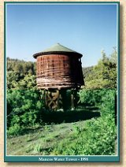

Mancos, Colorado - Mile Post 122.50 - Elev. 7008ft
Mancos, Colorado Photo Gallery
|
 |


|
The Narrow Gauge Circle is written, maintained,and hosted by: Mark L. Evans Send Comments to:Mark L. Evans All original materials, text, and digital images Copyright © 1995-2014 Mark L. Evans. All rights reserved. Imitation is said to be the "sincerest" form of flattery.....Please don't flatter us without permission. |